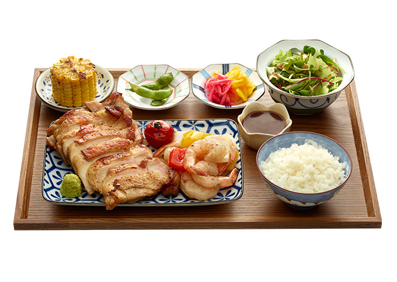
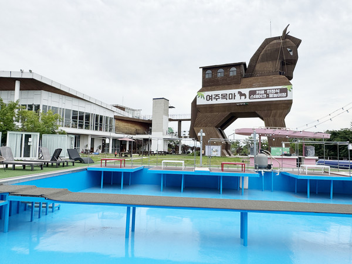
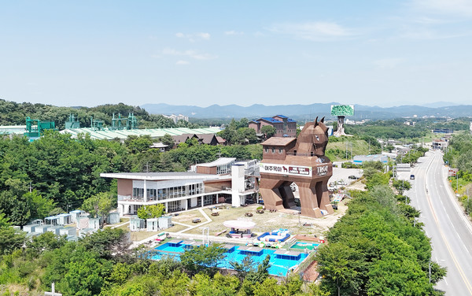

식음
쇼핑 다음의 식사
메뉴
목마 아래에서
취향을 고르세요
1층 도쿄스테이크·국수나무, 2층 카페 트로이·한정식 여목. 아울렛을 다녀오는 길에, 또는 물놀이·모임 전후로 이어집니다.
AFTER SHOP
약 10분
여주 프리미엄 아울렛에서 차로 약 10분. 쇼핑을 마친 뒤 목마 앞에서 한 끼를 더하면, 여주 하루가 완성됩니다.



도쿄스테이크 메뉴 컷: 브랜드 공식 자료 · 현장 다이닝 컷 병행. 실제 플레이팅·가격은 매장 안내에 따릅니다.
식사 전후, 수영장·룸·홀
날짜를 고르고 글라스룸·방갈로·어울림홀을 한 화면에서 신청하세요.
FREE
안내 보기
식사 후 애견운동장
반려동물 운동장 무료 이용